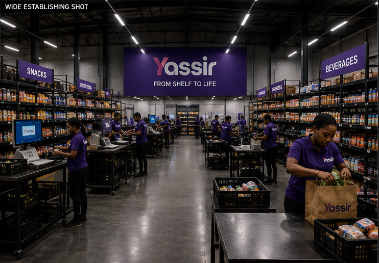
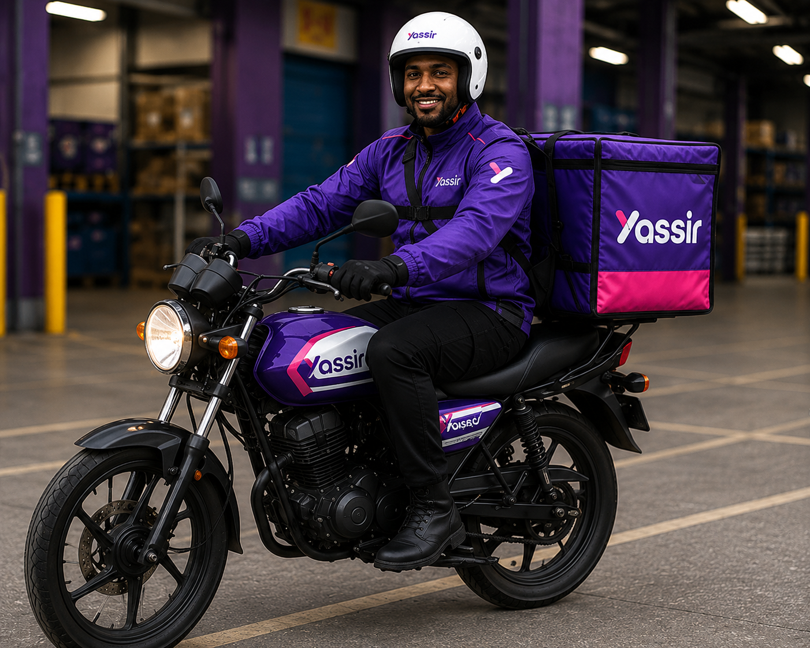
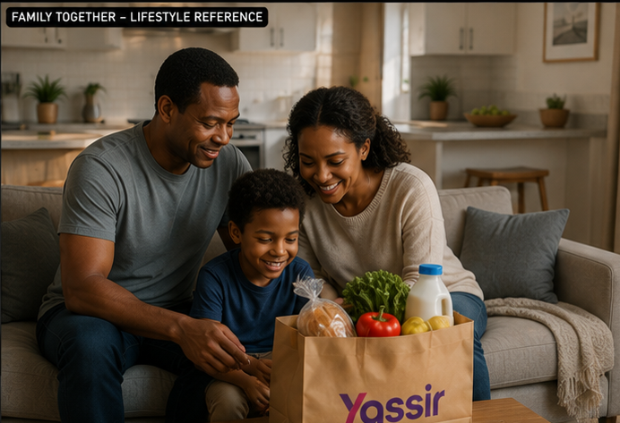

Turn the journey from shelf to doorstep into a human story.
The supplied campaign material gives the project a clear visual system: product, fulfilment environment, delivery movement and the household at the end of the journey.
From commerce infrastructure to everyday life
“Shelf to Life” works as a visual progression rather than a simple product advertisement. The campaign film is supported by reference imagery that moves from the Yassir bag and dark-store environment toward the rider and the family receiving the value of the service.
The result is a more complete commerce narrative: the shelf is not the destination; it is the beginning of an experience that ends in real life.
Four distinct frames. One connected journey.
These four reference frames define the campaign world from fulfilment and brand object through delivery movement and the people at the end of the journey.




Close the story with a clear brand finish.
The branded end card gives the film a defined campaign endpoint, bringing the narrative back to the Yassir identity and call to action.

Make the service feel physical, useful and human.
The visual direction balances operational scale with warmth so the campaign does not stop at logistics.
Start with the object
The Yassir bag gives the campaign an immediate visual anchor and a recognisable branded element.
Show the system
The dark-store frame establishes the hidden environment where products are organised and prepared before delivery.
End with people
The rider and family references shift the story from infrastructure to movement, convenience and everyday life, before the branded end card closes the communication.
Build the campaign as a visual system, not a single shot.
Reference-led and production-minded.
The supplied filenames identify a Grok rider reference, but the exact generation and editing tools for every asset are not documented.
Rather than invent a tool-by-tool production history, this case study keeps the attribution precise: AI-assisted visual development, reference-led image direction, cinematic video and editorial sequencing. The supplied rider asset is explicitly labelled as a Grok reference in the repository filename.
How a commerce story can move from shelf to life.
Yassir — Shelf to Life demonstrates a broader approach to advertising creative: show the system behind the service, then connect that system to the people who experience its value.
The strongest portfolio story is not simply the delivery itself. It is the relationship between brand, infrastructure, movement, everyday life and a clear branded finish.